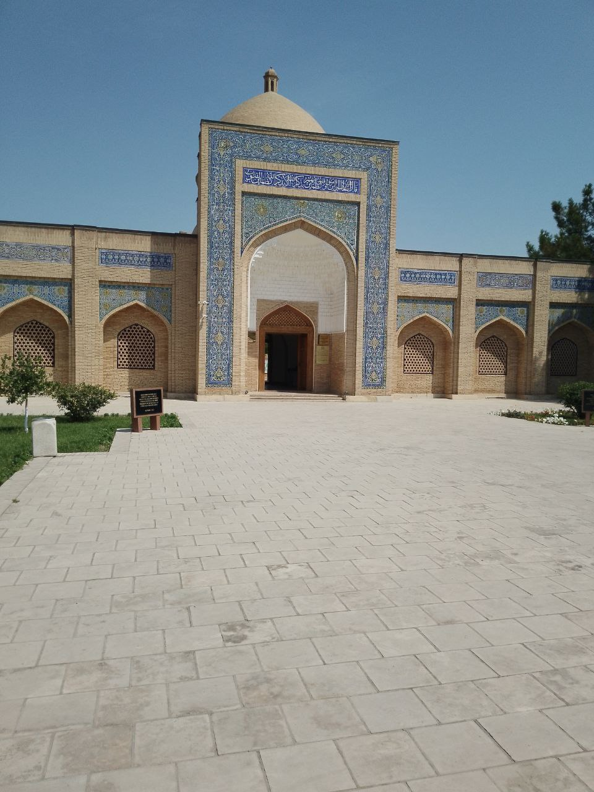

Что такое тасаввуф (суфизм): его основы и ордены Ясавия и Накшбандия
Суфизм — внутреннее, духовное измерение ислама: путь приближения к Богу через очищение сердца и поминание Его. В истории узбекского и центральноазиатского ислама особое место занимают два ордена — Ясавия, основанный Ходжой Ахмадом Ясави, и Накшбандия, связанный с Бахауддином Накшбандом. Это руководство объясняет основы суфизма, его ключевые термины, а также историю и основателей этих двух орденов — уважительно и исключительно на основе авторитетных источников (Encyclopaedia Iranica, ЮНЕСКО и др.).

Суфизм (арабское тасаввуф) — внутреннее, духовное или мистическое измерение ислама, направленное на познание и любовь к Богу через очищение сердца и благочестие. Он укоренён в ихсане, одном из трёх измерений религии; в хадисе Джибриля ихсан определяется как «поклоняться Богу так, будто ты видишь Его, а если не видишь — то знать, что Он видит тебя». Центральная цель суфизма — воспитать и очистить душу (тазкият ан-нафс). Основные ордены действуют в рамках шариата. Ниже его основы и два ордена, наиболее близких к Центральной Азии, изложены исключительно на основе авторитетных источников.
Ключевые термины
В суфизме есть несколько ключевых терминов. Муршид (также шейх или пир) — духовный наставник и проводник. Мурид — ученик, вступивший на путь суфизма. Силсила — духовная цепь, связывающая шейха через его учителей, в конечном счёте восходящая к Пророку. Тарика (тарикат) — «путь», то есть суфийский орден. Зикр — поминание Бога, повторение Его имени языком или в сердце; это главная суфийская практика, совершаемая наряду с обязательными обрядами. Ханака — обитель, где собираются суфии, духовный центр.
Орден Ясавия и Ходжа Ахмад Ясави
Ясавия была первым крупным суфийским орденом, распространившимся среди тюркских народов, и связана с Ходжой Ахмадом Ясави. ЮНЕСКО называет его «выдающимся суфийским учителем XII века»; его жизнь обычно датируют ок. 1093–1166 годов. «Ясави» означает «из города Ясы»; он умер в Ясы (Туркестан) на территории нынешнего южного Казахстана. Его учителем был Юсуф Хамадани. Один из важнейших вкладов Ясави — создание религиозно-духовной поэзии на тюркском языке, что сильно способствовало распространению ислама среди тюркских народов. Приписываемый ему «Диван-и Хикмат» («Книга мудрости») — сборник хикматов (коротких суфийских стихов), считающийся первым крупным суфийским произведением на тюркском языке (текст дополнялся и в более поздние века, поэтому «приписываемый»).

Мавзолей Ясави — объект ЮНЕСКО
Мавзолей Ходжи Ахмада Ясави в Туркестане был построен по приказу Тимура (Амира Темура) около 1389–1405 годов на месте более ранней небольшой гробницы; он остался незавершённым из-за смерти Тимура в 1405 году. Это огромное здание типа ханаки, объединяющее мавзолей и мечеть, имеет один из крупнейших куполов в Центральной Азии; опробованные здесь строительные приёмы позднее использовались в Самарканде. Мавзолей внесён в Список всемирного наследия ЮНЕСКО в 2003 году. ЮНЕСКО напрямую связывает его с «распространением ислама в этом регионе с помощью суфийских орденов».
Орден Накшбандия и Бахауддин Накшбанд
Накшбандия получила своё имя в честь Бахауддина Накшбанда из Бухары. Encyclopaedia Iranica приводит его точные даты: родился в 1318 году, умер 2 марта 1389 года. Он родился в селении Каср-и Хиндуван близ Бухары; после его смерти село было переименовано в Каср-и Арифан — там находятся его гробница и мемориальный комплекс. Имя «Накшбанд» указывает на «запечатление» имени Бога в сердце через постоянное, безмолвное поминание.
Безмолвный зикр и «Сердце с Богом, руки в деле»
Отличительная черта Накшбандии — безмолвный зикр (зикр, совершаемый внутренне, без голоса). Следуя наставлению более раннего учителя Абд аль-Халика Гидждувани, Бахауддин сделал безмолвный зикр основной практикой ордена. Его знаменитые принципы — «Хальват дар анджуман» (уединение в толпе — быть внутренне с Богом, оставаясь внешне активным в жизни) и «Дил ба яр, даст ба кар» (сердце с Возлюбленным — Богом, а руки в деле). Эти принципы представляют суфизм не как уход от мира, а как духовную искренность внутри труда и общества.
Цепь Ходжаган
Корни Накшбандии восходят к духовной цепи «Ходжаган» (Мастеров) в Центральной Азии. Эта цепь проходит через Юсуфа Хамадани (ум. 1140) и Абд аль-Халика Гидждувани; Гидждувани был среди мастеров, сформировавших основные принципы ордена. Бахауддин Накшбанд занимал ключевое место в этой цепи и дал ордену его имя. В последующие века Накшбандия распространилась сначала среди тюркских народов, затем широко в Османской империи и Индии (реформаторская ветвь Муджаддидия, связанная с Ахмадом Сирхинди).
Значение в Центральной Азии сегодня
Сегодня обе святыни — комплекс Бахауддина Накшбанда близ Бухары (Каср-и Арифан) и Мавзолей Ясави в Туркестане — остаются важными духовными центрами, привлекающими множество паломников. Комплекс Накшбанда вырос в действующий ансамбль из мечетей, медресе, дворов и гостевых келий и несколько раз реставрировался. Эти памятники — неотъемлемая часть исламского и духовного наследия узбекского и центральноазиатских народов.
Важное замечание
Это общая, основанная на фактах информация, а не религиозное предписание или пропаганда. Для более глубокого и точного знания истории, терминов и практик суфизма и орденов рекомендуется обращаться к квалифицированным религиозным учёным и надёжным научным источникам. Некоторые даты (например, смерть Ясави — 1166 или 1167) слегка различаются между источниками.

Источники
- Encyclopaedia Iranica — «BAHĀʾ-AL-DĪN NAQŠBAND» (Hamid Algar): aniq sanalar 1318–1389, Qasri Orifon, xufiya zikr
- UNESCO World Heritage Centre — Mausoleum of Khoja Ahmed Yasawi (site no. 1103, 2003-yilda roʻyxatga olingan; Temur davrida qurilishi)
- University of Pennsylvania, Russian & East European Studies — Bahouddin Naqshband Memorial, Uzbekistan (Xojagon silsilasi, ziyoratgoh)
- Harvard Pluralism Project — Sufism: Seeking God (tasavvuf taʼrifi, zikr, ehson)
- Encyclopaedia Iranica — «ḴĀNAQĀH» (xonaqoh; Temur Yassaviy qabri ustiga xonaqoh qurdirgani)